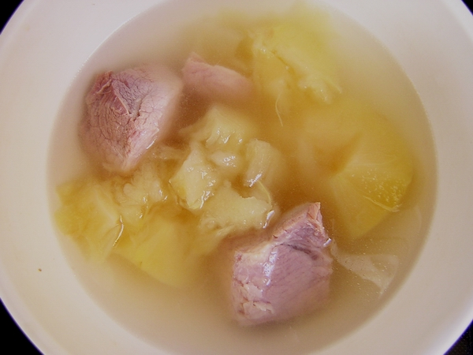

| Auteur | deedee |
Tutorial de la soupe aux pommes et à la viande salée |
||
| Outils | -softice (non, je plaisante... ) -une casserole -4 pommes royales (sans peau, et coupées en 4) -500 G de viande du porc salée en gros moceaux que l'on laisse mariner dans le réfrigérateur pendant au moins une jounée. |
|||
| Cible | les vegetariennes comme lise grim |
|
|
soupe aux pommes et à la viande salée
accompagnez la viande avec piment Thailandais et de sauce de soja Maggi ( consommé avec modération )  Greeting: lise grim ( pour lui redonner du gout, une petite salade par jour ne se nourrire pas ) tHE ANALYST ( je me demands si il y a un geek qui sais faire la cuisine, qui ne mange pas que chez Macdo...), mimas ( on pourra manger bien sans le frigo ) christal ( merci à son aide pour la cuisine, ah pardon... cracking ! ) [ sans ordre préference :p ] |
Bonne Journée